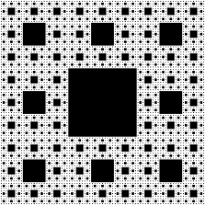

Le projet du tapis de sierpinski m’a demandé de regarder à quoi cela correspondait  pour que je puisse comprendre l’ensemble de la programmation python et l’énoncé donné par mon professeur de NSI (enoncé). Ma principale difficulté a été de comprendre les deux règles du tapis de sierpinski et de trouver à quoi correspond F et G dans la courbe de Koch et dans chaque niter voici mon raisonnement : Niter = 1 : (F-G-G)-(F-G-G)+(F-G-G)+(F-G-G)-(F-G-G) Niter = 2 :(F-G+F+G-F-GG-GG)- (F-G+F+G-F-GG-GG)+(F-G+F+G-F-GG-GG) +(F-G+F+G-F-GG-GG)-(F-G+F+G-F-GG-GG) Le tp corrigé m’a ensuite aidé à créer la fractale du tapis de Sierpinski.
Voici le résultat de mon travail